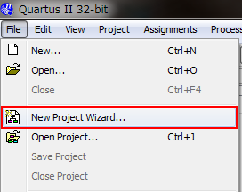
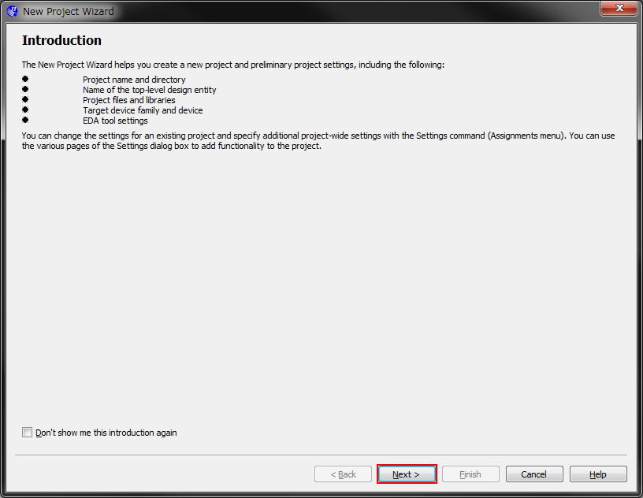
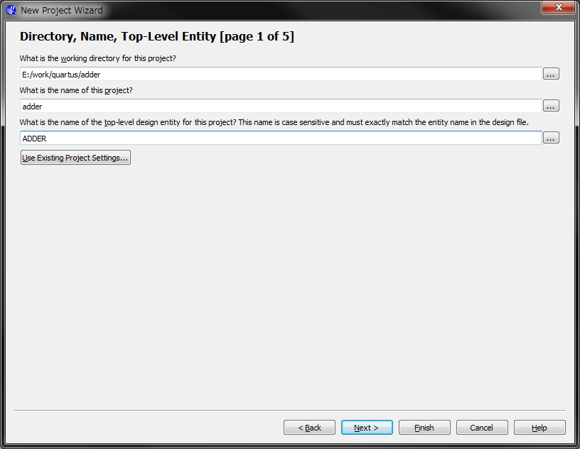
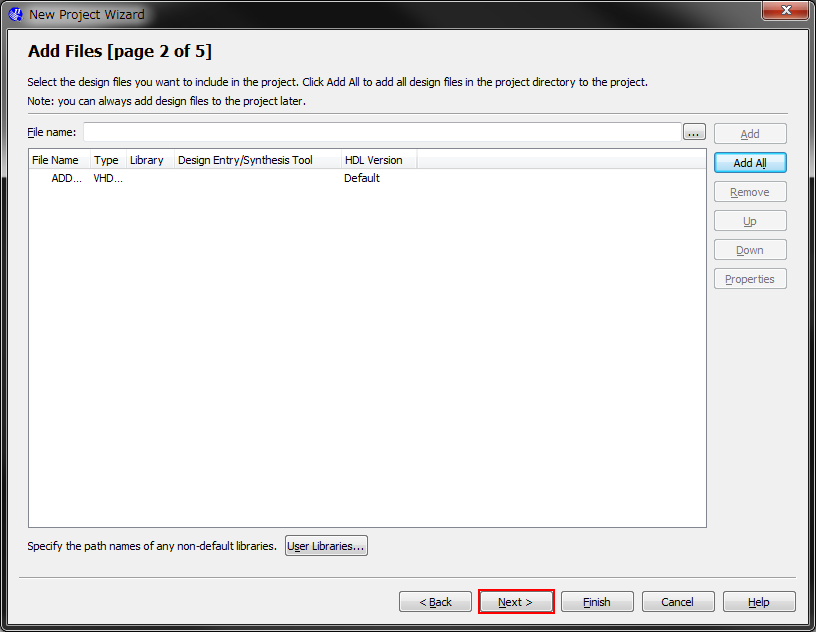
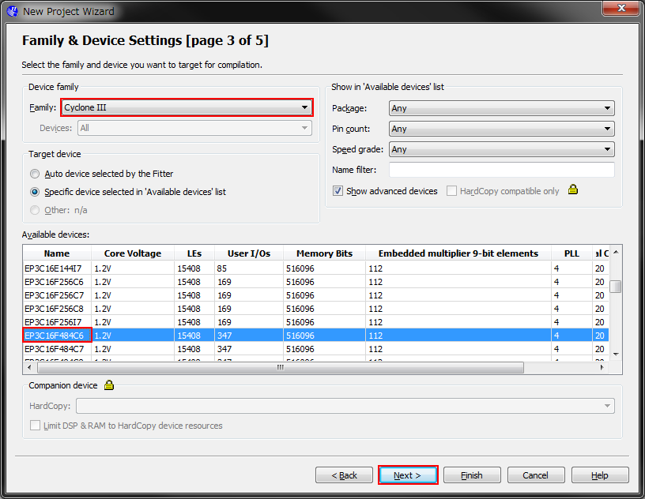
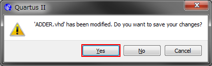
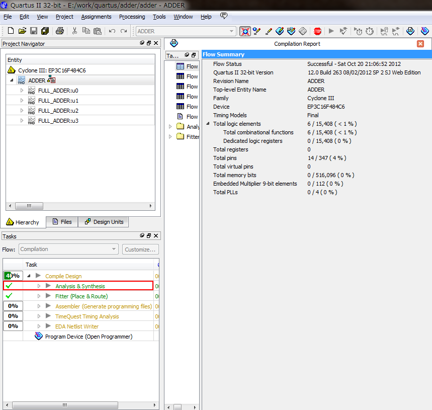
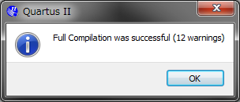

Quartus IIの使用方法 - 加算器の作成
はじめに
ここでは，Quartus IIを用いたFPGA開発の手順について解説していきます． 組合せ回路の基本である桁上げ伝搬加算器をVHDLで記述し，RTLシミュレーションで動作を確認した後にTerasic DE0に実装してみます． VHDLでの回路設計に関する解説は割愛しますが，記述例を掲載しますのでご覧ください． FPGA開発ボードが手元になくても，RTLシミュレーションでHDL記述の動作を確認できるので，HDLの勉強の参考にもなるのではないでしょうか．
以降で掲載するスクリーンショットは下記の環境のものです． Quartus IIのインストール方法については，こちらをご覧ください．
| OS | Microsoft Windows 7 Professional x64 Service Pack 1 |
|---|---|
| Quartus II | Altera Quartus II 12.0sp2 Web Edition |
| ModelSim | Mentor Graphics ModelSim-Altera Starter Edition v10.0d Service Pack 2 |
桁上げ伝搬加算器（準備中）
今回記述する桁上げ伝搬加算器について簡単に説明します． FPGAを触る方のほとんどは少なからず論理回路について学んだ経験があると思いますので，不要かもしれませんが…． この回路について詳しく知りたい方は，Wikipediaなどをご利用ください．
プロジェクトの新規作成
Quartus IIを起動し，左上の「File」から「New Project Wizard...」を選択します．
{kind=link}
New Project Wizardが開くので，「Next」を選択します．
{kind=link}
プロジェクトに関連するファイルを格納するフォルダ（working directory）を選択します． プロジェクトごとに異なったフォルダを準備しましょう． 次に，任意のプロジェクト名を入力します．今回は「adder」としました． また，設計する回路の最上位エンティティ名前の入力が求められますが，後で変更可能ですので，未定の場合はプロジェクト名と同一で問題ありません． 今回は「ADDER」としました．
{kind=link}
プロジェクトにインポートしたい既存のファイルがあれば，ここで追加できます．ない場合は「Next」を選択しましょう． 既存ファイルは，追加する前に，1つ前で作成したworking directoryにコピーまたは移動しておきましょう．
{kind=link}
設計・記述した回路を実装するFPGAを選択します． デバイスの種類が多くて一覧から探すのに時間がかかる場合は，「Device family」などの項目を使って絞込みをかけてみましょう． 今回はTerasic DE0に実装したいと思いますので，DE0に搭載されているCyclone IIIの「EP3C16F484C6」を選択しました． FPGA開発ボードが手元にない場合は，未選択のままでもOKです．
FPGAの選択が終わったら，以降のページは設定を変更する必要はないので「Next」を繰り返し選択するか， 「Finish」を選択してNew Project Wizardを終了し，プロジェクト作成を完了しましょう．
{kind=link}
VHDLによる回路記述
HDLを記述するファイルを新規作成します．左上の「File」から「New...」を選択します．

ウィンドウが開くので，VHDLで記述する場合は「VHDL File」を，Verilog-HDLで記述する場合は「Verilog HDL File」を選択します． 回路が複雑・大規模になると1つの回路を複数のファイルで構成することになります． そのときは同様の操作でファイルを新規作成しましょう．
なお，今回私が設計した加算器は3つのファイルで構成されています．

回路をHDLで記述します． 本ページはQuartus IIの使用方法の解説を主な目的としていますので，回路記述に関する解説は省略します． VHDLによる4bit桁上げ伝搬加算器の記述例を掲載しますので，参考にしてください．
以下は，半加算器の記述（half_adder.vhd）です．
library IEEE;
use IEEE.std_logic_1164.all;
-- half adder module
entity half_adder is port(
a: in std_logic;
b: in std_logic;
s: out std_logic;
co: out std_logic);
end half_adder;
architecture rtl of half_adder is
signal wire_or: std_logic;
signal wire_nand: std_logic;
begin
wire_or <= a or b;
wire_nand <= a nand b;
co <= not wire_nand;
s <= wire_or and wire_nand;
end rtl;
以下は，全加算器の記述（FULL_ADDER.vhd）です．
library IEEE;
use IEEE.std_logic_1164.all;
-- full adder module
entity FULL_ADDER is port(
A: in std_logic;
B: in std_logic;
CI: in std_logic;
S: out std_logic;
CO: out std_logic);
end FULL_ADDER;
architecture rtl of FULL_ADDER is
signal wire_u0_s: std_logic;
signal wire_u0_co: std_logic;
signal wire_u1_co: std_logic;
component half_adder port(
a: in std_logic;
b: in std_logic;
s: out std_logic;
co: out std_logic);
end component;
begin
CO <= wire_u0_co or wire_u1_co;
u0: half_adder port map(
a => A,
b => B,
s => wire_u0_s,
co => wire_u0_co);
u1: half_adder port map(
a => wire_u0_s,
b => CI,
s => S,
co => wire_u1_co);
end rtl;
以下は，全加算器を4つ使用して4bit桁上げ伝搬加算器を構成する，最上位エンティティの記述（ADDER.vhd）です．
library IEEE;
use IEEE.std_logic_1164.all;
-- 4bit adder module
entity ADDER is port(
A: in std_logic_vector(3 downto 0);
B: in std_logic_vector(3 downto 0);
CI: in std_logic;
S: out std_logic_vector(3 downto 0);
CO: out std_logic);
end ADDER;
architecture rtl of ADDER is
signal wire_u0_CO: std_logic;
signal wire_u1_CO: std_logic;
signal wire_u2_CO: std_logic;
component FULL_ADDER port(
A: in std_logic;
B: in std_logic;
CI: in std_logic;
S: out std_logic;
CO: out std_logic);
end component;
begin
u0: FULL_ADDER port map( -- bit 0
A => A(0),
B => B(0),
CI => CI,
S => S(0),
CO => wire_u0_CO);
u1: FULL_ADDER port map( -- bit 1
A => A(1),
B => B(1),
CI => wire_u0_CO,
S => S(1),
CO => wire_u1_CO);
u2: FULL_ADDER port map( -- bit 2
A => A(2),
B => B(2),
CI => wire_u1_CO,
S => S(2),
CO => wire_u2_CO);
u3: FULL_ADDER port map( -- bit 3
A => A(3),
B => B(3),
CI => wire_u2_CO,
S => S(3),
CO => CO);
end rtl;
コンパイル
一通り記述が終わったら，再生ボタンのようなボタンを選択してコンパイルをしてみましょう．

コンパイル前に，変更のあるファイルを上書きするかどうか聞いてくる場合があります．
{kind=link}
HDLの記述にエラーがある場合は，「Analysis & Synthesis」でコンパイルが止まってしまいます．
{kind=link}
警告が十数個出るかもしれませんが無視してください． エラーがある場合は，該当箇所を修正して，エラーが消えるまでコンパイルを繰り返しましょう．
{kind=link}
ひとまず回路の記述が終わりました． 次は，記述した回路が意図した動作をするかどうか，RTLシミュレーションを実行して確認してみましょう．
次のステップ: ModelSimの使用方法 - 加算器のRTLシミュレーション
ModelSimの使用方法 - 加算器のRTLシミュレーションでは， Quartus IIとModelSimの連携と，ModelSimを用いたRTLシミュレーションの実行について解説します． よろしければご覧ください．